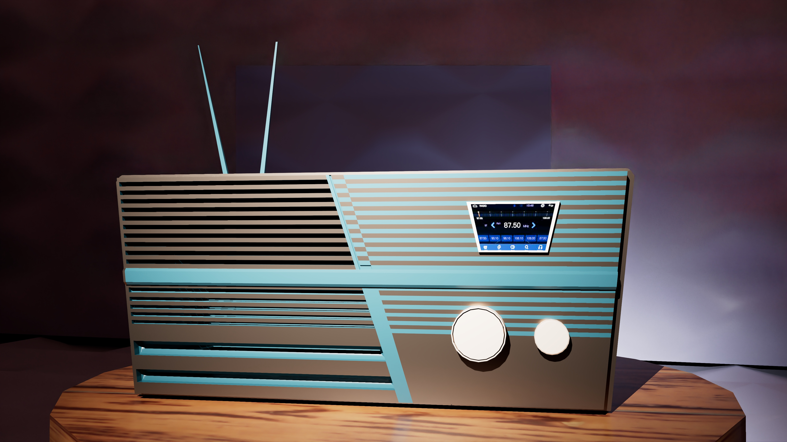
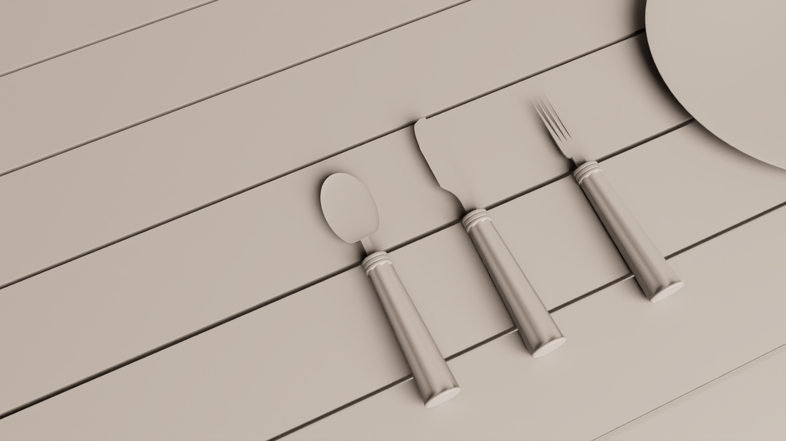
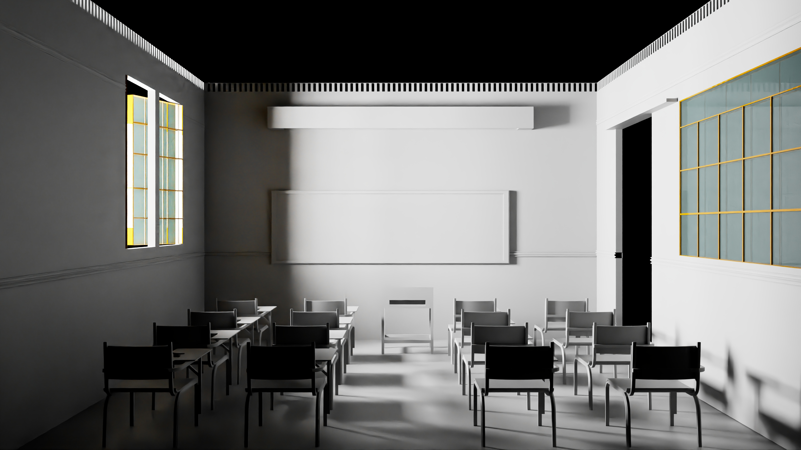
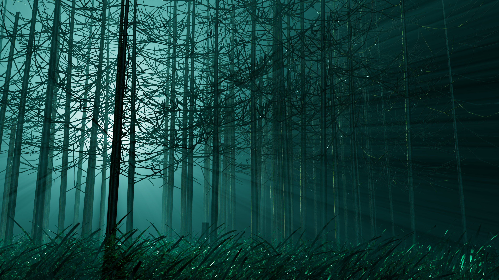
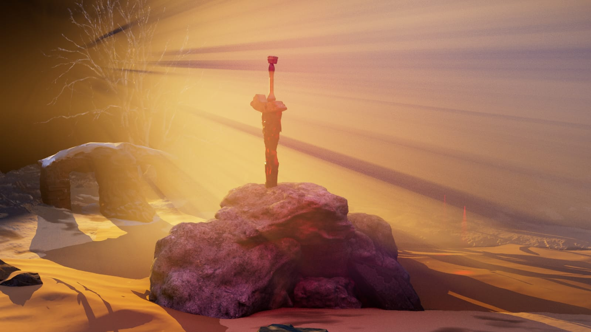

Available for work · 2026
Crafting Worlds in Motion
3D Animator · Cloth Simulation · Motion Design
6+
Years in Industry
3
Studios
50+
Projects Shipped
Selected Work




Skills Galaxy
About & Experience
Based in India
The Artist
Behind
the Reel
A passionate 3D Animator & Designer with over 6 years in the industry, specializing in bringing imagination to life through photorealistic rendering, cinematic environments, and fluid cloth simulation.
Having worked at Technicolor Creative Studio, Hexerve Solution, and currently at Forus Electric, I've built expertise across the full 3D production pipeline — from concept to final composite.
Experience & Education
2025 – Present
Current
Animation Designer
Forus Electric Pvt Ltd
Design high-quality product animations, 3D visualizations, and motion graphics for electric vehicle products. Integrate AI in video and image generation workflows for accelerated production.
2024
3D Artist
Hexerve Solution
Created high-quality product models, 3D animations, and motion graphics for visual storytelling and client deliverables across diverse industries.
2022 – 2023
Cloth Simulation &
Groom Artist
Technicolor Creative Studio
Spearheaded cloth simulations and sculpted hair and fur elements for feature film productions. Finalized shots with lighting, texturing, and animation polish at a global VFX studio.
2019 – 2022
Education
B.Sc. Animation &
Multimedia
Vishwakarma University
Bachelor's degree in Animation and Multimedia with focus on 3D production pipelines, visual effects, and digital media arts.